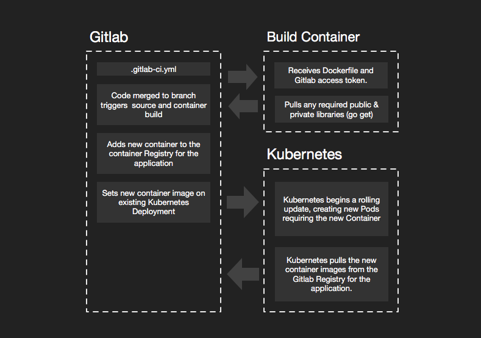
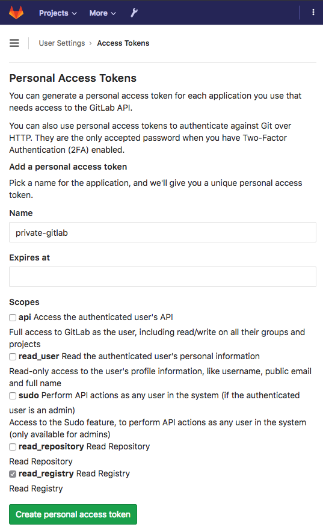
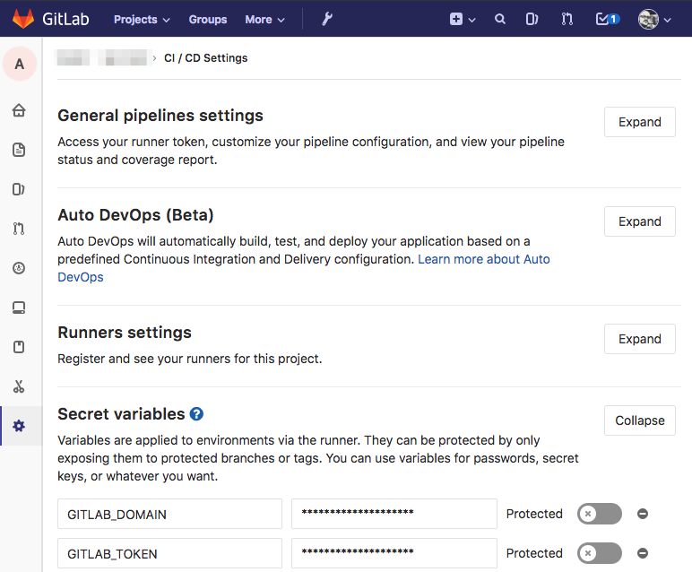
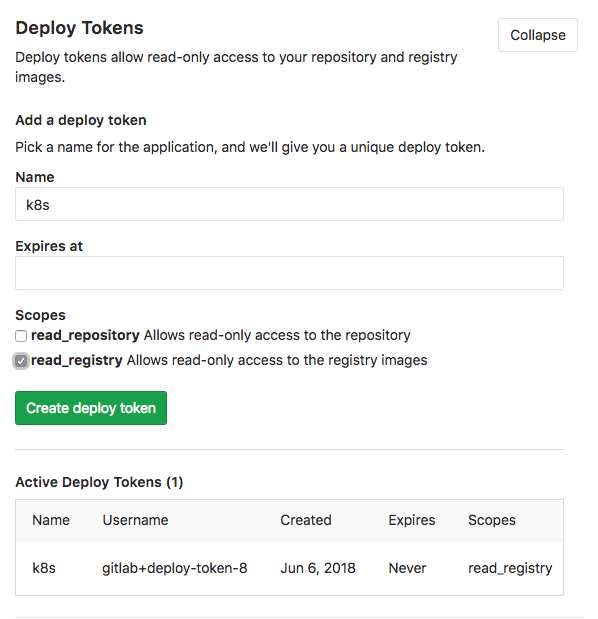
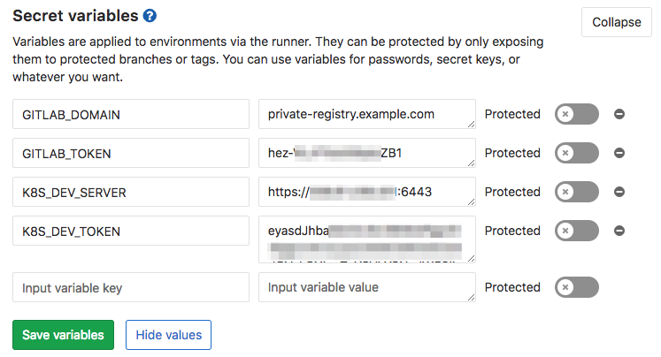

Many of the resources on Cloud Native Microservices show you how easy it is to get up and running with AWS or GKE. I think this is great but for the fact that I see a trend (in my clients at least) of associating concepts with particular products or worse, companies. I love Amazon, but it’s not THE cloud). In my opinion, to embrace Cloud Native and Microservices you should develop some, and host them yourself. The cloud is not Google or Amazon; it’s any cluster of virtualized systems, abstracted from their hardware interfaces and centrally managed.
The following workflow currently manages dozens of projects for me, some of which have been through thousands of builds; I find it highly stable. This workflow is also much more flexible and customizable than a lot of turn-key solutions. It requires a bit of explanation but typically only involves about twenty minutes of setup per microservice application, well worth the investment considering you get a simplified build and deploy script.

Overview
If you are like me your early days were developing Java or Perl scripts that were installed on dev, staging or production hardware and executed under the Apache or Tomcat web servers, and that may still be part of your architecture today. Big monolithic applications, running on big fast servers that you could visit at the data center. However many developers like myself have started moving new development to Cloud Native Microservices. The process of deploying monoliths is not really any different, except that while traditional monoliths do not tend to run in containers, they can.
Many tutorials I run across assume you might get to live in a utopian world, where all your code is open source and hosted on public Github repositories and deployment means up and running a local, single node k8s cluster like Minikube. To be fair, this simplifies the technical details of the examples, and it broadens the audience by giving local sandbox examples that you can adapt to your production environment, and helps many of us quickly get our head around novel concepts. This tutorial is intended to be applied directly to a production development process.
A Microservice Stack
I choose five technologies in my workflow to give you some examples. I am referring to open source (and free) software only, not services.
-
Kubernetes with Alpine Linux Docker containers is the core of my cloud. This cloud can be run almost anywhere from AWS to Vultr, Digital Ocean, Linode or some co-located servers you have running in a data center. If you want to learn how to set up a production style Kubernetes cluster on the cheap, I suggest reading my post, Production Hobby Cluster. The Production Hobby Cluster tutorial gets you a legit, highly available, three node Kubernetes cluster for about $15 a month. Don’t plan on hosting Netflix on it, but when you need to scale your architecture it won’t require a complete overhaul. Larger instances and more of them is often all that is needed to scale the Production Hobby Cluster from hobby to enterprise.
-
Golang / Go to write your Microservices, those small API endpoints that satisfy some simple, single or small group of requirements. I use Go because it compiles to a self-sufficient little binary that runs at home in the smallest of Docker containers and is able to efficiently serve raw TCP or HTTP traffic on a specified port. Go is also an excellent language for extending the cloud itself, but that is a bit much for this article.
-
Gitlab is my choice for self-hosted code and CI/CD (Automation). Github is fantastic and any code I do not need to keep private goes straight there; however, even my open source projects get cloned into Gitlab so I can take advantage of its simple build and deployment automation. I run a private copy of Gitlab in my cloud. Some of my older projects run through Jenkins, and it’s an excellent tool but overkill these days for most of my workflow, now that Gitlab has matured. Rather than pay for services I would rather pay for instances to grow my cluster and self-host more services.
The Microservice Application
The following is a simplified workflow for a Microservices application and one or more libraries as separate repositories. Not every lib needs its own. However, it’s a good idea to separate any libraries that many projects share. Examples would be common structs or system-wide service implementations.
- The Microservice application:
/go/src/gitlab.example.com/proj/app - A library:
/go/src/gitlab.example.com/lib/example
Workflow & Boilerplate
Golang with Gitlab and Kubernetes, Microservice application, file structure boilerplate:
README.md
main.go
Dockerfile
./k8s/dev
10-namespace.yml
20-service.yml
30-config.yml
40-deployment.yml
50-ingress.yml
README.md
.gitlab-ci.yml
I’ll start at the top of the list and work down. Every repository needs a README.md with simple instruction for development and deployment, environment variables and build considerations. I opt for brief and straightforward documentation; I want my documentation as maintainable as my code. Microservices should have micro-documentation, everything you need and not more.
Source: main.go (server.go)
Most of my Microservices development start with something similar to this server.go boilerplate, using fast and simple gin-gonic for web/api framework and Uber’s zap for “Blazing fast, structured, leveled logging”.
What you don’t see in the boilerplate are a few private libs that get added in depending on the project or specific service. These system-wide libs share business logic and import from the private Gitlab repository.
import (
"private-gitlab.example.com/some/lib"
"private-gitlab.example.com/some/otherlib"
)
It can be tricky allowing external build systems to pull these private libraries; however, that is overcome easily with Gitlab tokens and some updates to the Dockerfile and .gitlab-ci.yml.
Container: Dockerfile
Nearly all my Microservices use the same Dockerfile. There are some adjustments and variations, but most of the time this boilerplate gives me exactly what I need, a compiled binary in a super small Alpine Linux container.
FROM golang:1.10.2-alpine3.7 AS builder
ARG GITLAB_TOKEN
ARG GITLAB_DOMAIN
RUN apk update \
&& apk add git
RUN mkdir -p /go/src \
&& mkdir -p /go/bin \
&& mkdir -p /go/pkg
ENV GOPATH=/go
ENV PATH=$GOPATH/bin:$PATH
RUN mkdir -p $GOPATH/src/app
ADD . $GOPATH/src/app
ADD . /go/src
WORKDIR $GOPATH/src/app
# go get uses git to pull lib dependencies
RUN git config --global url."https://oauth2:$GITLAB_TOKEN@$GITLAB_DOMAIN".insteadOf "https://$GITLAB_DOMAIN"
RUN go get .
RUN go get github.com/json-iterator/go
RUN CGO_ENABLED=0 go build -tags=jsoniter -a -installsuffix cgo -o /go/bin/server .
FROM alpine:3.7
WORKDIR /
COPY --from=builder /go/bin/server /server
ENTRYPOINT ["/server"]
Grab a copy with wget if you like:
wget https://gist.githubusercontent.com/cjimti/c988db3ff1a798eb3e18d76f3d71e75a/raw/adfaadc34c643f1af2c6ddfdc91aba80d6322fb7/Dockerfile
If your service needs to communicate out over https, you need to add RUN apk add --no-cache ca-certificates to install root certificates. However, I like to keep my containers as small as possible 5-15 megabyte range, so I only add what I need for the service. I could get these even smaller using scratch, but I find Alpine Linux a good balance.
An important feature of this Dockerfile is allowing go to go get libraries from the private Gitlab repository. The two ARG lines, GITLAB_TOKEN and GITLAB_DOMAIN are populated in docker build command found .gitlab-ci.yml that I go over further down this article. The git configuration directive RUN git config --global url."https://oauth2:$GITLAB_TOKEN@$GITLAB_DOMAIN".insteadOf "https://$GITLAB_DOMAIN" tells git to prepend oauth2:$GITLAB_TOKEN when pulling from $GITLAB_DOMAIN. Since our $GITLAB_DOMAIN is a private repository we need to use a token to authenticate from within the Docker container during the build process.
I generate a Gitlab token from a generic user that has access to all the repositories containing my privately shared libraries.
To test this container locally, you can run the docker build command found in .gitlab-ci.yml below.
docker build --build-arg GITLAB_TOKEN=$GITLAB_TOKEN \
--build-arg GITLAB_DOMAIN=$GITLAB_DOMAIN \
-t example_app .
First, you need to obtain a token from Gitlab, see below.
Gitlab User Token
You need to create a Gitlab user with access to specific repositories, groups, or all (or use your personal account if you work solo). If your team is small, you may not need fine-grained security here. Remember we only need read-only access, so it’s not essential to keep the secret safe from anyone who already had read access. Make sure to copy the generated token to your notes for use further down to configure the Gitlab project.

All you need is the generated token; the Name is used for keeping track of your tokens in Gitlab.
Gitlab Project Settings: Secret Variables
Assuming you have already setup a Gitlab repository for your Microservice, add the Secret variables GITLAB_DOMAIN (should be something like gitlab.example.com), review its use in the Dockerfile above, and GITLAB_TOKEN, the one we just generated. GITLAB_TOKEN allows go get to pull private libraries in from your imports.
There are ways to avoid having to go get dependencies, by using utilities like godeps and pre-packaging required libraries; you don’t have to retrieve at build time. However, this can also make development difficult if you are actively developing those libraries at the same time, as I often do. The configuration above gives you the option to do it either way.

Kubernetes: ./k8s/dev
My workflow starts with deploying a minimally working version of my microservice to a development environment; this can be a separate cluster, a just a separate namespace. I use a separate cluster. Setting up a cheap development cluster is easy and gives you more opportunities to experiment; check out Production Hobby Cluster for an agile environment perfect for development and experimentation.
We use kubectl to configure and deploy the new service. I’ll assume you have some familiarity with it. kubectl makes it easy to switch between multiple clusters: kubectl config use-context phc-dev, see my post, kubectl Context Multiple Clusters for a detailed example.
Namespace: ./k8s/dev/10-namespace.yml
I use a pretty standard form for all my Kubernetes objects. This example assumes we have a project called the-project and consists of many Microservices. Although the namespace is at the project level and not specific to a service, I keep a copy in each service. Duplicating this namespace configuration helps document the service and Kubernetes does not add the namespace if it already exists.
I also label every configuration with a client and env, this aids in selection rules and adds additional clarity of purpose.
./k8s/dev/10-namespace.yml:
apiVersion: v1
kind: Namespace
metadata:
name: the-project
labels:
client: internal
env: dev
Service: ./k8s/dev/20-service.yml
Services are persistent in Kubernetes. While Pods come and go, Services stick around and attach themselves to any Pods that match their selection rules. I like to setup services first to help illustrate this decoupled nature.
apiVersion: v1
kind: Service
metadata:
name: example-microservice
namespace: the-project
labels:
app: example-microservice
client: internal
env: dev
spec:
selector:
app: example-microservice
ports:
- protocol: "TCP"
port: 8080
targetPort: 8080
type: ClusterIP
Most of my services attach to Pods with the same name as the service. The name: of my Kubernetes object and app: labels nearly always match. I never prefix or suffix the object type as I have seen in some tutorials, this makes kubectl commands cleaner. Here are some examples of selecting all objects associated with a Microservice:
kubectl get all -l app=example-microservice -n the-project
I use ClusterIP for type: because I don’t need a publicly accessible IP address or port. I use Ingress on Custom Kubernetes for external access.
Config: ./k8s/dev/30-config.yml
Configuration using 30-config.yml is optional since many of my Microservices share the same configuration. However, the setup is the same.
Example ./k8s/dev/30-config.yml:
apiVersion: v1
kind: ConfigMap
metadata:
name: example-microservice
namespace: the-project
labels:
app: example-microservice
client: internal
env: dev
data:
dev_config.yml: |
something:
important: true
token:
encKey: "somethingsecure"
expHours: 24
cassandra:
cluster: ["lax1.cas.example.com","ny1.cas.example.com"]
keyspace: dev_app
In the deployment configuration below we mount this ConfigMap into the file system of our Pod. Mounting a ConfigMap as files allow our service to test outside the cloud with plain configuration files easily.
Deployment: ./k8s/dev/40-deployment.yml
apiVersion: apps/v1
kind: Deployment
metadata:
name: example-microservice
namespace: fuse
labels:
app: example-microservice
client: internal
env: dev
spec:
replicas: 2
selector:
matchLabels:
app: example-microservice
template:
metadata:
labels:
app: example-microservice
client: internal
env: dev
spec:
imagePullSecrets:
- name: example-microservice-regcred # see k8s/README.md
volumes:
- name: config-volume
configMap:
# ConfigMap specified in 30-config.yml
name: example-microservice
containers:
- name: api5-auth
# subsequent releases will use gitlab dev-PIPELINE_ID
image: private-registry.example.com:5050/the-project/example-microservice:dev-latest
imagePullPolicy: Always
volumeMounts:
- name: config-volume
mountPath: /configs
env:
- name: BASE_PATH
value: "/example/api/endpoint"
- name: CONFIG
value: "/configs/dev_config.yml"
- name: DEBUG
value: "true"
- name: PORT
value: "8080"
- name: AGENT
valueFrom:
fieldRef:
fieldPath: metadata.name
ports:
- name: tcp
containerPort: 8080
Before running you need another token from Gitlab: a Deploy Token Kubernetes needs to pull the image from Gitlab’s repository.
Gitlab Project Settings: Generate Gitlab Deploy Token
In Gitlab under the repository settings for your example-microservice, choose Repository and expand the Deploy Tokens section. Create a deploy token by giving it a name (I leave the expiration empty) and check the read_registry scope. You need the generated Username and token below, keep them in your notes.

In the 40-deployment.yml file above you can review the entry under imagePullSecrets to see we reference example-microservice-regcred.
Create the example-microservice-regcred Secret in Kubernetes:
kubectl create secret docker-registry example-microservice-regcred \
--namespace=the-project \
--docker-server=private-registry.example.com:5050 \
--docker-username=gitlab+deploy-token-8 \
--docker-password=GHKddKqY1gzW86yllh3x \
--docker-email=developer@example.com
The kubectl create secret command creates a special kind of Secret, docker-registry used by Kubernetes when issuing pulls for Docker containers. This secret is made available for all the deployments in the the-project namespace. The --docker-server parameter specifies the repository host and port. In this case, we use the Gitlab container registry of our private Gitlab installation. The --docker-username and --docker-password parameters were generated in the kubectl create secret docker-registry command above.
Once the secret is created it can be used by adding example-microservice-regcred in the imagePullSecrets for our example-microservice deployment.
Ingress ./k8s/dev/50-ingress.yml
Setup Ingress on Custom Kubernetes if you have not done so already. You should also secure your ingress API endpoints with HTTPS, a secure, free and easy way of doing this involves setting up Let’s Encrypt on Kubernetes with cert-manager.
50-ingress.yml
The following Ingress on Custom Kubernetes configuration directs traffic for HTTP port 80 and HTTPS port 443 on our example domain api.the-project.dev.example.com to port 8080 on the example-microservice we setup in Services configuration 20-service.yml above.
apiVersion: extensions/v1beta1
kind: Ingress
metadata:
name: example-microservice
namespace: the-project
labels:
app: example-microservice
client: internal
env: dev
spec:
rules:
- host: api.the-project.dev.example.com
http:
paths:
- backend:
serviceName: example-microservice
servicePort: 8080
path: /example/api/endpoint
tls:
- hosts:
- api.example.com
secretName: the-project-dev-production-tls
Initial Kubernetes Deployment
I never automate the initial configuration and deployment of Microservices in Kubernetes. There are a few things that once setup don’t need to change per iteration. Packing the install for automatic configuration and deployment is better left to the Kubernetes package manager Helm, and after development iterations have stabilized into a more mature state. In this example workflow we are just getting started.
The quick way:
cd ./k8s/dev
kubectl create -f .
The sane way:
cd ./k8s/dev
kubectl create -f ./10-namespace.yml
kubectl create -f ./20-service.yml
kubectl create -f ./30-config.yml
kubectl create -f ./40-deployment.yml
kubectl create -f ./50-ingress.yml
You should now have a couple of Pods, a Deployment, a ConfigMap, a Service and Ingress all labeled with app: example-microservice in the namespace the-project.
List the Kubernetes objects:
kubectl get po,svc,deploy,ing -l app=example-microservice -n the-project
The deployment above fails, erroring on the fact that there is no container image to pull for the Pod we specified in the Deployment (40-deployment.yml). You can always build an image and push it to Gitlab’s registry before configuring the deployment; however, Kubernetes continues attempts to pull the image. This error is ok and how I typically set up new projects. Since the CI scripts job is to build and deploy by updating an image, it’s easier if there is already a Deployment waiting for it. This process might make more sense when we review the .gitlab-ci.yml CI script below.
Automated Builds and Deployments: .gitlab-ci.yml
Make sure to first configure runners in Gitlab and enable runners for the current repository. When you push source code into Gitlab, and CI is enabled. Gitlab executes the instructions found in .gitlab-ci.yml if one exists.
The following is an example .gitlab-ci.yml I commonly use for building and deploying Microservices in Kubernetes. Skim over the file and after I’ll go over the critical parts.
image: txn2/docker-kubectl
variables:
DOCKER_DRIVER: overlay2
GIT_STRATEGY: fetch
before_script:
- docker login -u gitlab-ci-token -p ${CI_JOB_TOKEN} private-registry.example.com:5050
dev_build:
stage: build
only:
- dev@the-project/example-microservice
script:
- docker build -t ${CI_REGISTRY_IMAGE}:dev-${CI_PIPELINE_ID} -f ./k8s/Dockerfile .
- docker push ${CI_REGISTRY_IMAGE}:dev-${CI_PIPELINE_ID}
- docker tag ${CI_REGISTRY_IMAGE}:dev-${CI_PIPELINE_ID} ${CI_REGISTRY_IMAGE}:dev-latest
- docker push ${CI_REGISTRY_IMAGE}:dev-latest
# update the deployment image
dev_deploy:
stage: deploy
only:
- dev@the-project/example-microservice
variables:
GIT_STRATEGY: none
script: |
kubectl set image deployment/example-microservice cog=${CI_REGISTRY_IMAGE}:dev-${CI_PIPELINE_ID} \
--namespace="the-project" \
--server="${K8S_DEV_SERVER}" \
--token="${K8S_DEV_TOKEN}" \
--insecure-skip-tls-verify=true
Runner image: txn2/docker-kubectl
The build script uses Docker and kubectl. You can use any base image and install these as part of the build and deploy stages; however, I find it faster to use an image with these utilities already installed. Use the Docker container txn2/docker-kubectl or create your own.
Dockerfile for Gitlab Kubernetes deployments:
FROM docker:latest
RUN apk update
RUN apk add curl
RUN curl -LO https://storage.googleapis.com/Kubernetes-release/release/$(curl -s https://storage.googleapis.com/Kubernetes-release/release/stable.txt)/bin/linux/amd64/kubectl
RUN chmod u+x kubectl && mv kubectl /bin/kubectl
If you choose to create a custom container, you need to make sure it is publicly accessible. Docker Hub hosts public images free of charge. You are welcome to stick with txn2/docker-kubectl
Runner before_script
The runner needs access to push Docker containers it builds back to the Gitlab container registry. GitLab CI/CD Variables provides the CI_JOB_TOKEN specifically for registry authentication. We don’t need Docker access for every stage. However, it’s a minor operation to issue a Docker login, so it’s one less thing we have to think about should we require access in later stages; for instance, a testing stage that may tag containers as passing or failing.
Excerpt from .gitlab-ci.yml
before_script:
- docker login -u gitlab-ci-token -p ${CI_JOB_TOKEN} private-registry.example.com:5050
Runner dev_build
The deb_build might look a little complicated, but it is only the docker build, docker tag and docker push commands along with the use of a few GitLab CI/CD Variables.
The GitLab CI/CD Variables used:
CI_REGISTRY_IMAGEreturns the address of the registry tied to the specific project.CI_PIPELINE_IDis the unique id of the current pipeline that GitLab CI uses internally. This variable gives us an always incrementing number, and this helps to distinguish our new container from a previously built one more easily. We could use a separate versioning system or even re-tag with an assigned version number after passing some test. The options are limitless.
Excerpt from .gitlab-ci.yml
dev_build:
stage: build
only:
- dev@the-project/example-microservice
script:
- docker build -t ${CI_REGISTRY_IMAGE}:dev-${CI_PIPELINE_ID} -f ./k8s/Dockerfile .
- docker push ${CI_REGISTRY_IMAGE}:dev-${CI_PIPELINE_ID}
- docker tag ${CI_REGISTRY_IMAGE}:dev-${CI_PIPELINE_ID} ${CI_REGISTRY_IMAGE}:dev-latest
- docker push ${CI_REGISTRY_IMAGE}:dev-latest
The dev_build: section only: to ensure the dev_build: script is run when the dev branch of the main repository receives a merge (after a pull request is approved). The directive dev@the-project/example-microservice ensures it does not run on forks of this repository.
Tagging a container dev lets us know that this container is not yet ready for production, it may need testing or may contain features not yet approved for production deployment. Additional tags can easily be given to this image in later stages, or new containers can be generated specifically for production.
This workflow assumes four or more git branches. In the example .gitlab-ci.yml I only cover operations on the dev branch, but you can easily extrapolate how stg and prod branches might work.
| Branch | Purpose |
|---|---|
| dev | The dev branch is anything in development, even features that may never be released. The code in the dev branch is continuously built and deployed to a development environment. |
| stg | The stg branch is for staging a service for the next production release, and any merges to the stg branch are built and deployed to the staging environment to await final approval for production release. |
| prod | The prod branch contains code reflecting the current state of production and any code pushed to the prod branch is release to the production environment. |
| master | The master branch is a reflection of the prod branch with no CI/CD triggers or jobs associated with it. |
Runner dev_deploy
In this example the stage: deploy runs directly after stage: build. In a more sophisticated setup, we may want to run some tests before and after a development deployment.
The dev_deploy: script deploys our new container with one command: kubectl set image. Setting a new image on a Deployment triggers Kubernetes to pull the new image, spin up the defined number of required Pods, then shut down any pods running the previous image. Rolling updates are a powerful feature of Kubernetes and help prevent any downtime if handled correctly.
Excerpt from .gitlab-ci.yml
# update the deployment image
dev_deploy:
stage: deploy
only:
- dev@the-project/example-microservice
variables:
GIT_STRATEGY: none
script: |
kubectl set image deployment/example-microservice example-microservice=${CI_REGISTRY_IMAGE}:dev-${CI_PIPELINE_ID} \
--namespace="the-project" \
--server="${K8S_DEV_SERVER}" \
--token="${K8S_DEV_TOKEN}" \
--insecure-skip-tls-verify=true
Note the new variables K8S_DEV_SERVER and K8S_DEV_TOKEN.
| Parameter | Purpose |
|---|---|
--server="${K8S_DEV_SERVER}" |
Tells kubectl what cluster to use. |
--token="${K8S_DEV_TOKEN}" |
used for authentication. |
If your custom Kubernetes cluster uses Role-based access control (RBAC), and it should, use the following steps to get a token granting kubectl access to the-project namespace.
You can combine three configuration directives into one yaml file and get the objects you need in Kubernetes. You need a ServiceAccount, a Role and a RoleBinding tying the two together.
apiVersion: v1
kind: ServiceAccount
metadata:
namespace: the-project
name: the-project
---
apiVersion: rbac.authorization.k8s.io/v1beta1
kind: Role
metadata:
namespace: the-project
name: deployer
rules:
- apiGroups: ["apps","extensions"]
resources: ["deployments","configmaps","pods","secrets","ingresses"]
verbs: ["create","get","delete","list","update","edit","watch","exec","patch"]
---
apiVersion: rbac.authorization.k8s.io/v1
kind: RoleBinding
metadata:
name: deployer
namespace: the-project
subjects:
- kind: ServiceAccount
namespace: the-project
name: the-project
roleRef:
kind: Role #this must be Role or ClusterRole
name: deployer # this must match the name of the Role or ClusterRole you wish to bind to
apiGroup: rbac.authorization.k8s.io
You need to extract the generated token from a secret automatically created for the new ServiceAccount.
kubectl describe serviceaccount the-project -n fuse
Name: the-project
Namespace: the-project
Labels: <none>
Annotations: <none>
Image pull secrets: <none>
Mountable secrets: the-project-token-bc7d2
Tokens: the-project-token-bc7d2
Events: <none>
The Tokens: key points to the name of the secret holding the token we need:
kubectl describe secret the-project-token-bc7d2 -n the-project
Under the token: key in the described secret, cut and past this long password. The token is useful for any application needing to deploy into the-project namespace.
Next, paste the key into Gitlab along with the path to your Kubernetes cluster.
Giltab Project > Settings (gear) > CI/CD > Secret variables:

These four variables allow Gitlab to communicate with its own registry from a container in the build stage with GITLAB_DOMAIN and GITLAB_TOKEN, and allow it to communicate with Kubernetes in the deploy stage with K8S_DEV_SERVER and K8S_DEV_TOKEN.
Conclusion
The process above takes me about twenty minutes per microservice application to setup. Considering that these projects may be around for years, and go through hundreds or even thousands of builds makes this a minimal investment in time.
Streamlining this workflow can be accomplished with utilities like the Kubernetes package manager Helm. However, caution is advised to ensure that every step in the workflow should make the workflow more clear and easy to visualize and understand a year from now. We should not be developing workflows for the sake of the workflow setup process. Build and deploy pipeline should make the process of using them and debugging them easy, years after they are up and running.
Port Forwarding / Local Development
Check out kubefwd for a simple command line utility that bulk forwards services of one or more namespaces to your local workstation.
Resources
- Production Hobby Cluster
- Ingress on Custom Kubernetes
- Let’s Encrypt on Kubernetes
- Extending Kubernetes: Create Controllers for Core and Custom Resources
- The package manager Helm on Custom Kubernetes
This blog post, titled: "A Microservices Workflow with Golang and Gitlab CI: Continuous Integration & Deployment" by Craig Johnston, is licensed under a Creative Commons Attribution 4.0 International License.